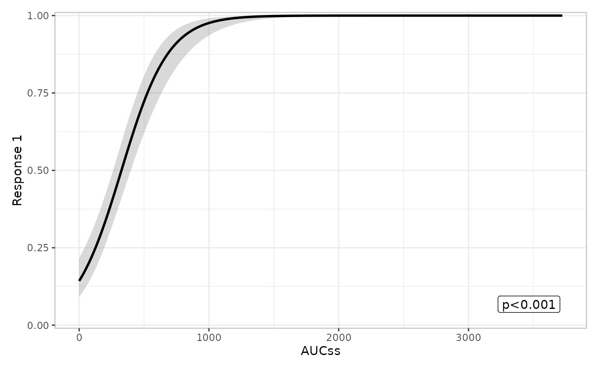
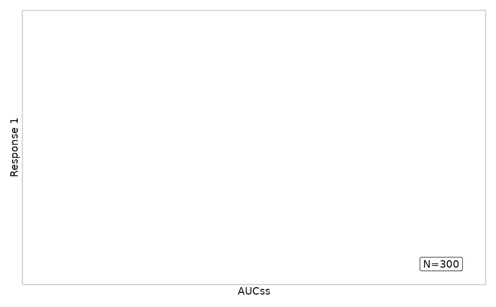

Adds the summary layer: a text/label annotation placed in whichever
corner of the base panel is furthest from the observed data (see
er_style_tag()'s corner_distance-based placement, computed from
object$data's raw (exposure, response) coordinates – not any
fitted curve). Unlike er_plot_add_model(), this layer doesn't require
a model: er_style_summary_pvalue() (the default) draws a p-value
derived from a supplied model's own er_summary() method, but
er_style_summary_n() is purely descriptive (total observation count,
or one count per stratum level) and needs no model at all.
Arguments
- object
Partially constructed plot (has S3 class
er_plot)- model
A fitted exposure-response model, or
NULL(the default). Only needed by a model-summary builder (e.g.er_style_summary_pvalue(), which callser_summary()on it); a purely descriptive builder (e.g.er_style_summary_n()) ignores it.- keep_strata
Logical, indicating whether this layer should be split by the plot's stratification variable; defaults to
TRUEifstratify_bywas set iner_plot(),FALSEotherwise. Passed through tostyleasstratify– whether/how a builder changes its behaviour whenTRUEis up to the builder itself (e.g.er_style_summary_pvalue()draws nothing at all, since one p-value doesn't unambiguously describe multiple curves).- style
Function drawing the summary annotation – defaults to
er_style_summary_pvalue().er_style_summary_n()is the other built-in option; any function matching the standard(data, config, stratify, exposure, response, strata, theme, ...)signature can be supplied instead – seeer_style().config$p_value(NULLunlessmodelwas supplied) andconfig$corner_distanceare the pre-computed pieces specific to this layer. Ifstyleis tagged with alayer(viaer_style_tag()) other than"summary", this errors informatively; an untagged builder is never checked.- ...
Additional named arguments forwarded, unchanged, to
stylewhen it's called at build time – seeer_style()'s "Passing extra arguments to a builder" section. Must be named.
Details
This layer is singleton – see er_plot()'s "Layers are either
singleton or additive" – so calling it twice replaces the previous
summary annotation rather than combining two. A builder wanting to show
several statistics at once composes them into one label/one set of
geoms itself, the way er_style_summary_n() does for multiple strata.
Examples
if (requireNamespace("erglm", quietly = TRUE)) {
library(erglm)
mod <- erglm_model(ae1 ~ aucss, erglm_data, family = binomial())
erglm_data |>
er_plot(aucss, ae1) |>
er_plot_add_model(mod) |>
er_plot_add_summary(model = mod) |>
plot()
# a purely descriptive annotation, with no model at all
erglm_data |>
er_plot(aucss, ae1) |>
er_plot_add_summary(style = er_style_summary_n) |>
plot()
}

